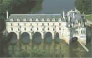
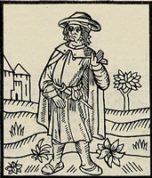
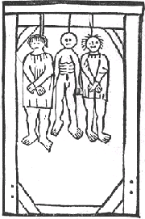
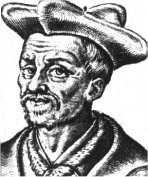
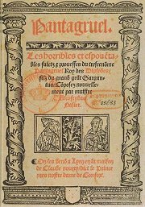
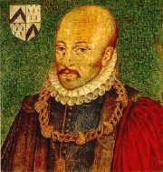
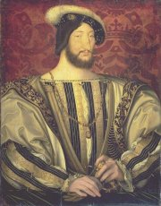
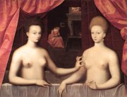

Chenonceaux [šenonso] je jeden z nejkrásnějších renesančních zámků ve Francii, na rozdíl od většiny z nich ale nestojí na březích Loiry.
|
RENESANČNÍ FRANCIE
Francie byla především rodištěm gotiky (přestavba katedrály Saint-Denis opatem Sugerem v roce 1140). Renesanční umění proniká do Francie za vlády krále Františka I. (1494-1547), který založil vysokou školu College de France [kolež d frans] a na svém dvoře hostil řadu italských umělců (Leonardo da Vinci…). Osobitý styl si vypěstovali malíři tzv. fontainebleuské [fontenbloské] školy (Primaticcio, Rosso…), kteří pracovali na výzdobě stejnojmenného zámku. Další renesanční zámky stojí na březích řeky Loira [loara]. Také pařížský Louver [luvr] je zčásti renesanční stavbou.
|
Historie
Ve stoleté válce (1337-1453) vytlačili Francouzi Angličany z kontinentální Evropy. Náboženské války mezi katolíky a hugenoty (1562-1596) ukončil edikt nantský (1598), který protestantům zaručoval náboženskou svobodu.
|
François Villon (1431-1463)

Čtyřverší, jež složiv svou Závěť, napsal Pařížan Villon v pařížském Châteletu, odsouzen k smrti oběšením
Františku, už tě nepotěší,
že Francouz jsi a ze vsi zdejší,
teď na krk oprátku ti věší,
ať pozná, oč je zadek těžší.
|
François Villon
François Villon [fransoa vijon] byl autorem cyklu básní Malý testament (Malá závěť) a Velký testament. Jeho tvorba navazuje na poezii potulných žáků (vagantů). Narodil se jako François de Montcorbier [monkorbje], ale po smrti otce se ho ujal benediktýnský mnich Guillaume Villon, díky němuž získal univerzitní vzdělání a dosáhl hodnosti mistra. François Villon se stal chráněncem vévody Karla Orleánského, ale protože byl bouřlivák, neustále se pohyboval na hranici zákona. Když v sebeobraně zavraždil mnicha, musel uprchnout z Paříže, aby se vyhnul trestu. Villon byl omilostněn, ale po návratu do Paříže se vrátil k nespoutanému životu, byl uvězněn a za různé krádeže odsouzen k trestu smrti, který byl na poslední chvíli změněn ve vyhnanství. Zde Villonovy stopy mizí.
|

François Villon dal jméno tzv. villonské baladě. Čím se tato básnická forma vyznačuje?
Kteří autoři psali villlonské balady?
Zkus složit villonskou baladu.
|
François Rabelais (1483-1553)

François Rabelais [fransoa rable] dlouho váhal mezi světskou a duchovní dráhou. Nejdříve vstoupil do františkánského řádu, ale později přestoupil k benediktýnům. Nakonec vystudoval lékařství a stal se učitelem anatomie. Jeho satirický román o obrech Gargantua a Pantagruel byl ve své době velmi populární a publikum si vyžádalo několik pokračování. Církev ho naopak odsoudila.
|
François Rabelais: Gargantua a Pantagruel
Satirický román Gargantua a Pantagruel vychází z lidových příběhů a mísí se v něm prvky renesanční i středověké. První kniha vypráví o výchově obra Gargantuy, jeho studiích v Paříži a založení utopistického opatství Thelémského. Druhá kniha popisuje různé kousky Gargantuova syna Pantagruela. Třetí kniha obsahuje Pantagruelovy úvahy a čtvrtá vypráví o jeho plavbě do věštírny Božské Lahvice, během níž navštíví řadu fantastických ostrovů. Pátou knihu zřejmě dopsal jiný autor.
Většina komických situací je založena na obrovských rozměrech Gargantuy a Pantagruela ve vztahu k malým lidem. Cílem satirických výpadů je hlavně středověká vzdělanost (scholastika), falešná morálka a další dobové nectnosti. Rabelais paroduje oblíbené žánry (rytířský román, utopické cestopisy, učené disputace…) a používá velmi bohatý jazyk, ve kterém se střídají vulgarismy s archaismy, neologismy a slovními hříčkami. Oba obři jsou symbolem živočišnosti a epikurejského způsobu života.
|

Výtisk Rabelaisova Pantagruela
Jak se lišila řehole thelémitů od skutečných středověkých řádů?
Srovnej život v klášterech, jak ho popisuje Rabelais a Boccaccio.
Co se stalo v obrových ústech?
Na čem je založena komika tohoto vyprávění?
|
Pierre de Ronsard
(1524-1585)
Pierre de Ronsard [pjér de ronsár] pocházel ze starého šlechtického rodu, byl členem skupiny Plejáda a autorem řady básnických sbírek. Ronsard psal ódy na panovníky i šlechtice, čímž si vysloužil titul kníže básníků a postavení oficiálního autora francouzských králů. Přestože byl knězem, věnoval se také poezii anakreontské (Laškování) a milostné (Lásky, Sonety Heleně).
|
Pierre de Ronsard: Lásky
Ronsardova básnická sbírka Lásky obsahuje především milostné sonety věnované patnáctileté Kassandře Salviatiové, kterou zahlédl na slavnosti v Blois, venkovské dívce Marii Dupinové a dvorní dámě Heleně de Sugeres.
|
Plejáda
Plejáda byla skupina sedmi francouzských básníků. Ronsard, Bellay (Obrana a oslava francouzského jazyka) a další členové usilovali o jazykovou vytříbenost a formální dokonalost, která by se vyrovnala antice. Zároveň prosazovali vznešená (zejména vlastenecká) témata.
Po vzoru Ronsarda napiš sonet věnovaný konkrétnímu člověku.
Znáš i jiné autory sonetů?
|
Michel de Montaigne
(1533-1592)

Michel de Montaigne [mišel de monteň] byl bohatý šlechtic a starosta v Bordeaux [bordo]. Později se stáhl do ústraní, aby se mohl plně věnovat studiu a tvorbě. Je autorem sbírky úvah Eseje a Cestovního deníku.
|
Michel de Montaigne: Eseje
Montaignovy Eseje jsou sbírkou úvah o přátelství, slávě, životě a smrti, výrazu tváře, zkušenosti, kanibalech, cestování kočáry a dalších tématech. Na rozdíl od svých předchůdců doplňuje Montaigne svá zamyšlení nejen příklady z antické literatury, ale také velmi osobními zážitky. Esejům nechybí sebeironie a nadhled, důležitý je subjektivní pohled autora a vnitřní opravdovost, se kterou se pouští do hledání odpovědí na důležité otázky lidského života. Pro jejich otevřenost zakázal Eseje král Ludvík XIV. i papež.
|

Jean Clouet: František I.
Vyber hlavní myšlenky z tohoto pojednání.
Se kterými názory souhlasíš a se kterými nesouhlasíš? Proč?
Napiš vlastní esej (zamyšlení, úvahu) na toto téma.
|
Internetové stránky
Francouzské renesanční umění, reprodukce
Francouzská literatura, autoři
Francouzská poezie, díla
Rabelais, informace
Rabelais
Pantagruelská pranostika
Ronsard, informace
Montaigne, informace
Société François Villon
Villonovy básně
|
Doporučená četba
Ardagh, Jones: Svět Francie, přel. R.Podaný, Knižní klub, Praha 1998
Bachtin, M.M.: François Rabelais a lidová kultura středověku a renesance, Praha 1975
Hry Osvobozeného divadla I, Československý spisovatel, Praha 1961 (Balada z hadrů)
Loukotková, Jarmila: Navzdory básník zpívá (román o Villonovi)
Montaigne, Michel de: Eseje, přel. V.Černý
Rabelais, François: Gargantua a Pantagruel (2 svazky), přel. Jihočeská Theléma, Melantrich, Praha 1953
Ronsard, Pierre de: Láska je u mne domovem, přel. G.Francl, Odeon, Praha 1985
Ronsard, Pierre de: Vezmi tu růži, přel. G.Francl, Praha 1974
Slovník francouzsky píšících spisovatelů
Sviták, Ivan: Montaigne, Orbis, Praha 1966
Villon, François: Básně, přel. O.Fischer, Mladá fronta, Praha 1995
Villon, F.: Šibeničník, přel. J.Loukotková, Československý spisovatel, Praha 1987
|
Připrav si referát o některé z uvedených knih nebo internetových stránek.

Jean Cousin mladší: Gabrielle d’Estrées a její sestra vévodkyně z Villarsu v lázni (fontainebleauská škola)
|
|